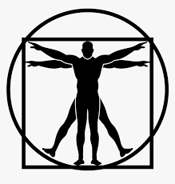

<nav class="navbar navbar-expand-lg navbar-light bg-light">
  <div class="container">
    <a class="navbar-brand" href="#">
      
      <span class="ml-3">Performance Optimization</span>
    </a>
    <div class="collapse navbar-collapse" id="navbarSupportedContent">
      <ul class="navbar-nav me-auto mb-2 mb-lg-0">
        <li class="nav-item">
          <a class="nav-link" routerLink="/home">Home</a>
        </li>
        <li class="nav-item">
          <a class="nav-link" routerLink="">Oura</a>
        </li>
        <li class="nav-item">
          <a class="nav-link" routerLink="/crossfilter">Modeling</a>
        </li>
        <li class="nav-item">
          <a class="nav-link" href="#">Latest</a>
        </li>
      </ul>
    </div>
  </div>
</nav>

<div>
  <router-outlet></router-outlet>
</div>
